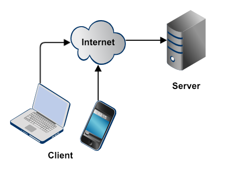

Lesson 45 - New Literacy
Build websites by Christmas
LEARN
Web Development
Computers and phones request content from web servers

New Ideas of Literacy
- 1980 - 3Rs
- 1990 - Computers - Microsoft Office
- 2000 - Internet - Google, Amazon
- 2010 - Phone - Social Media
- 2020 - Human Connection - YouTube
Literacy Today
- eCommerce
- Social media
- Crowd sourcing
Literacy Today
- Understand the human impact of technology
- The new literacy is about using technology to connect
- Avoid the harmful affects of technology
- Create sustainable and healthy practices
Opportunity
- Understanding technology is your competitive advantage.
- Workplace restructuring is your key opportunity.
- Literacy is always about sharing ideas.
- You will be hired to help with technology.
Software Runs the World
- Every industry - Retail, Transportation, Health care, Education, Government, Business, Research
- Every aspect of work
- Every business
Web Development
Computers and phones request content from web servers
What will you learn?
- Business and Social Issues
- Technology - how it works
- HTML
- CSS
- JavaScript
- Projects - hands-on creative problem solving
- Design - Beautiful pages
- Development - Tools & Techniques
Zybooks Reading
- Sign up for Zybooks
- Reading assigned every day
Website for BACS 200
- https://mark-seaman.github.io/bacs200
- Github Pages Repo
- View the website for BACS 200
Git Repo for BACS 200
- https://github.com/Mark-Seaman/mark-seaman.github.io
- Public repo to publish course content
- Pull the repo to edit the content